Sketchbook.
Cliente
Progetto personale
Settore
Illustrazione · Ricerca visiva
Ruolo
Autore unico
Periodo
Ongoing
Overview
Sketchbook è il mio spazio libero — niente brief, niente cliente, niente deadline. È il posto dove disegno per il piacere di farlo: ritratti, character design, studi cromatici, esperimenti tecnici.
È anche il laboratorio in cui provo strumenti, palette e linguaggi nuovi prima di portarli nei progetti commissionati. Una parte di queste illustrazioni nasce digitale, un'altra parte parte da pagine analogiche e viene poi rielaborata.
Quello che vedi qui sotto è una selezione del materiale che mi piace di più — in continua evoluzione.
Editorial concept · The Puglieser
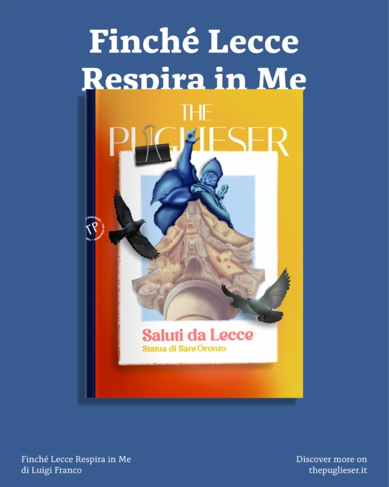
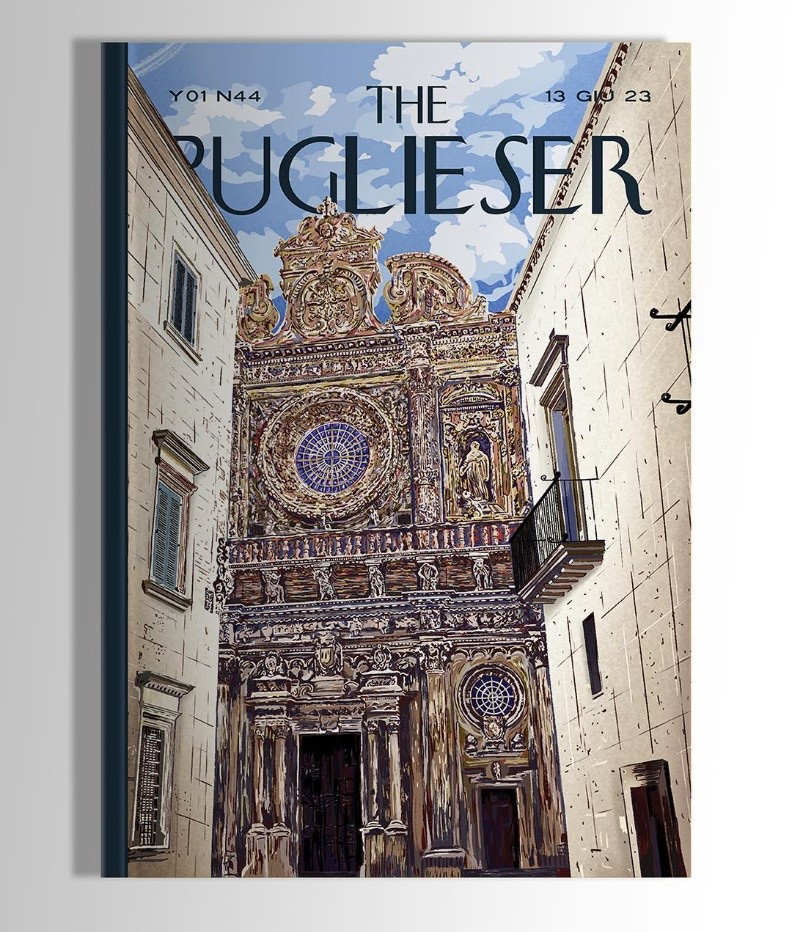
Sport visuals
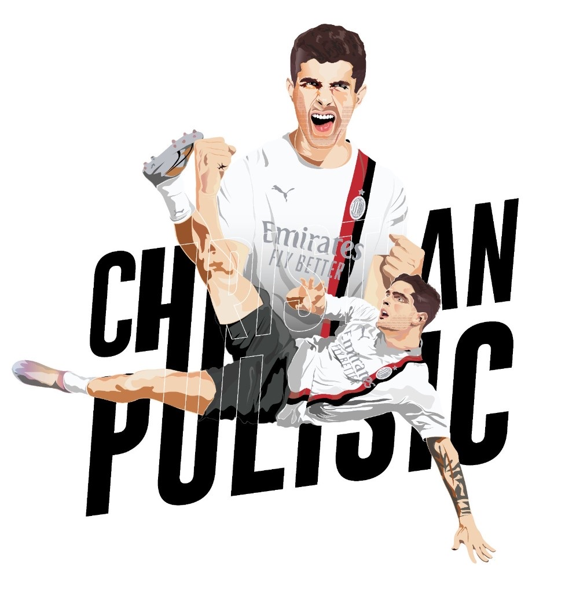
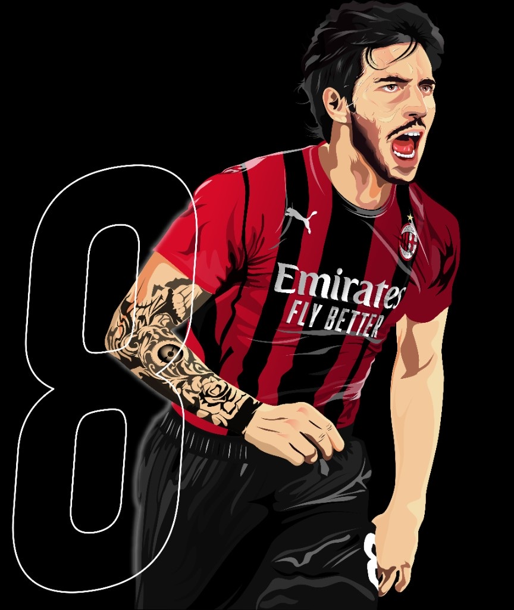
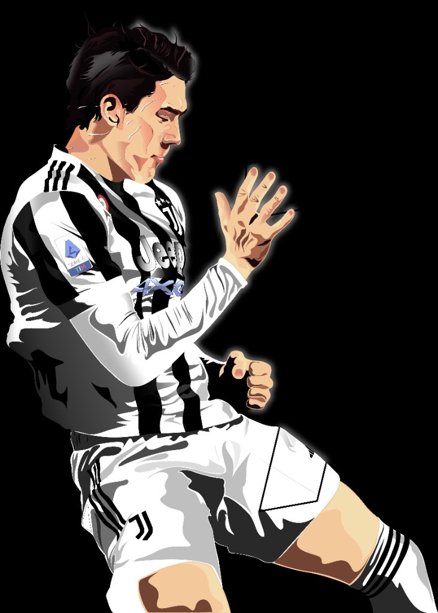
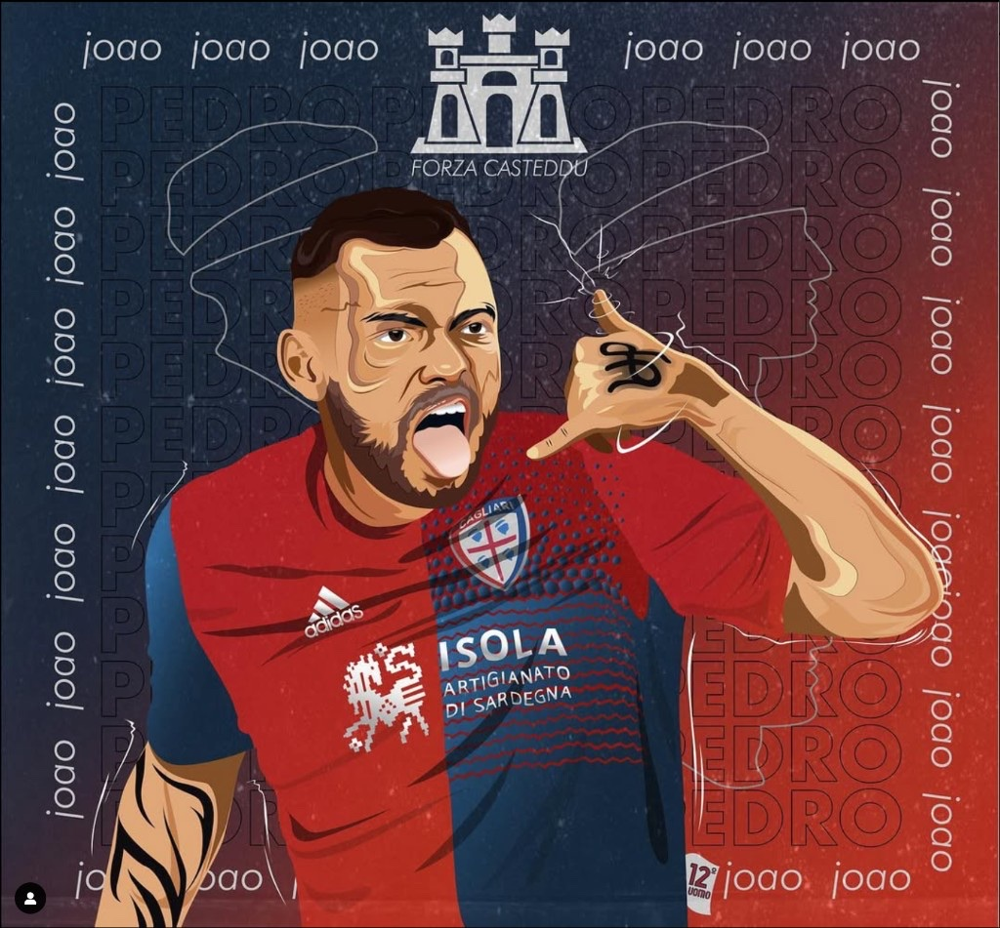
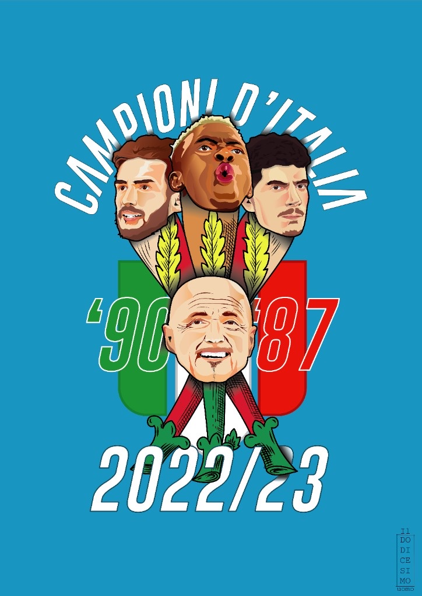
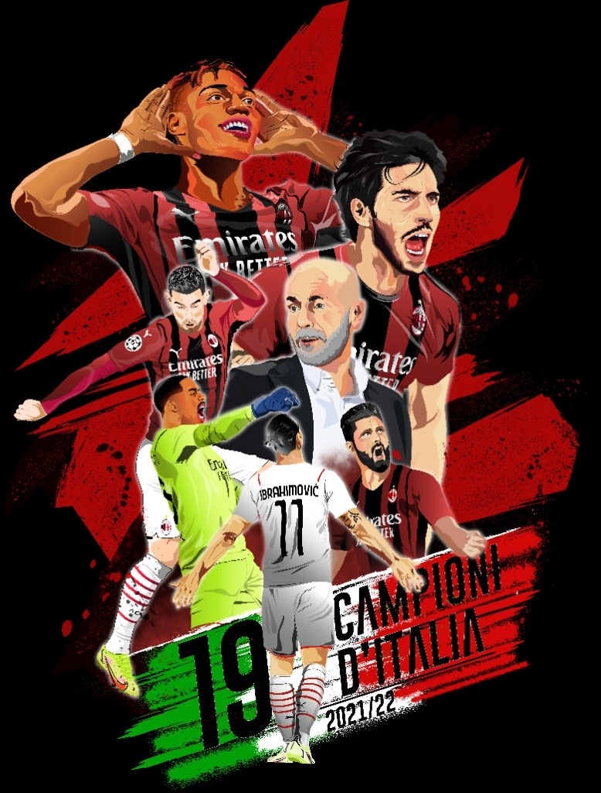
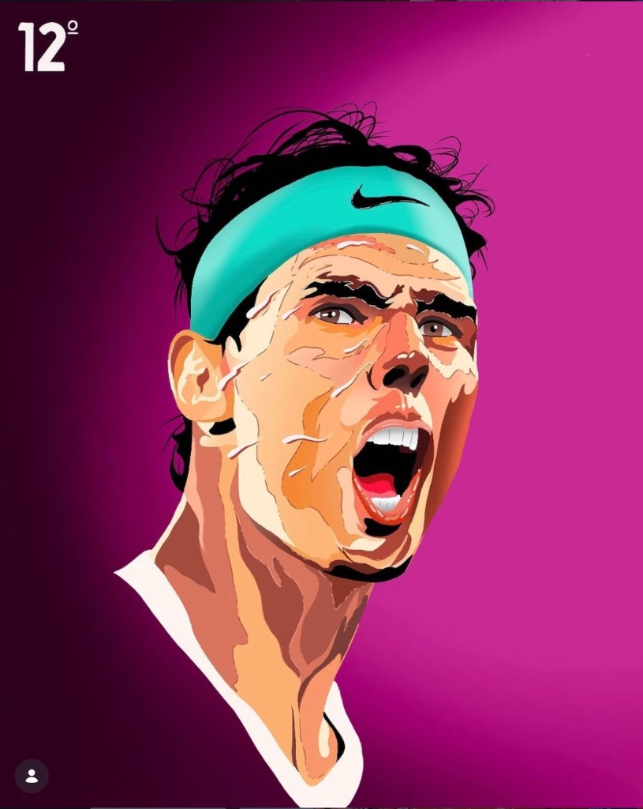
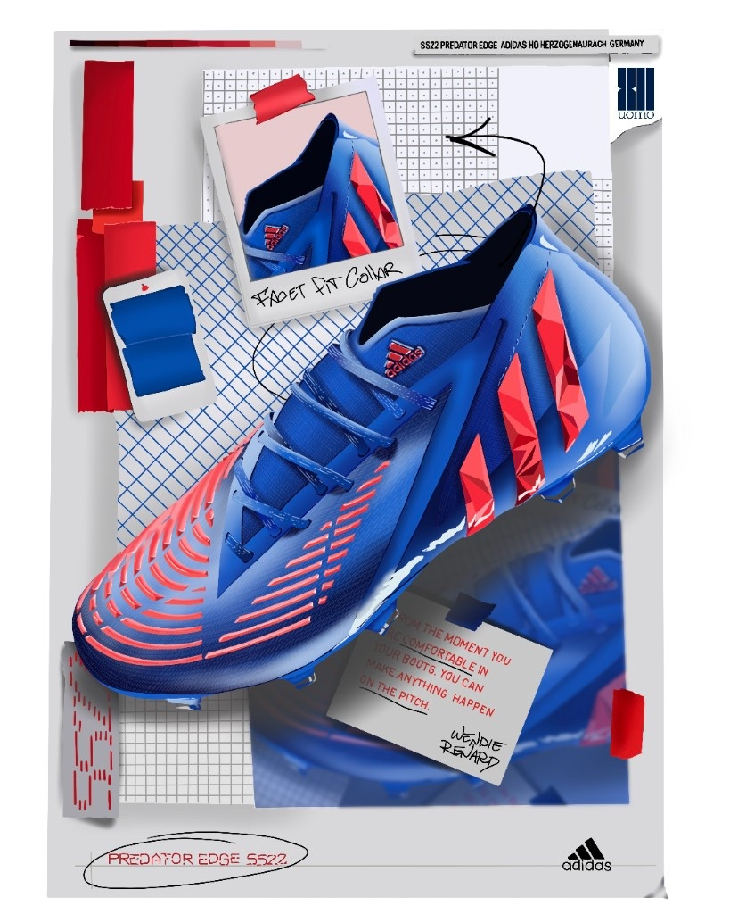
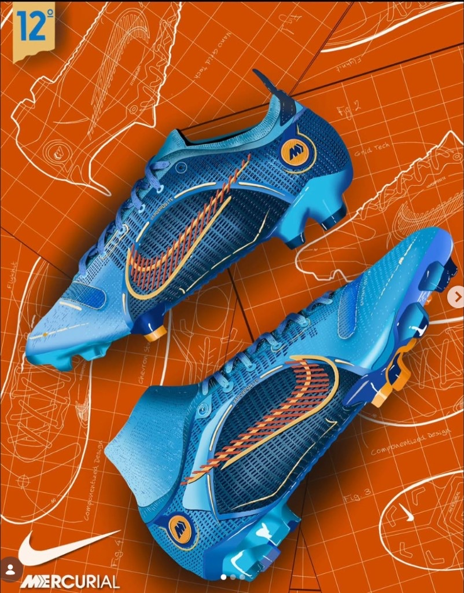